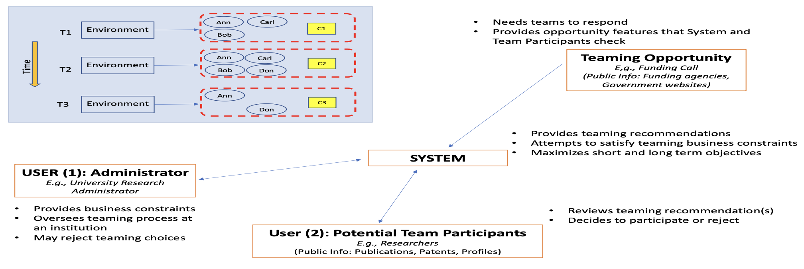
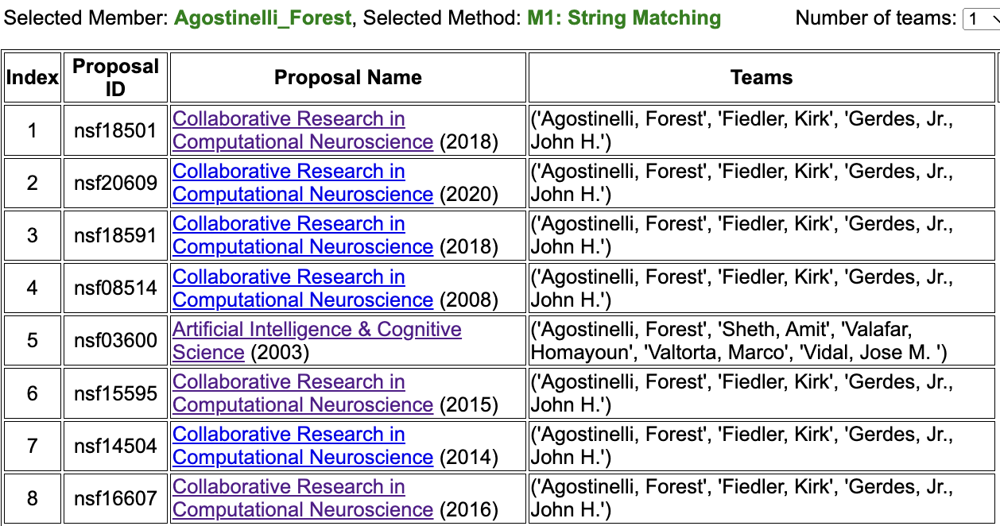
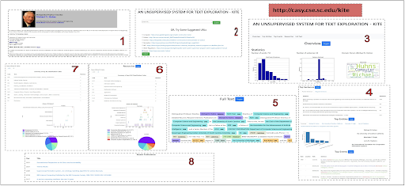

AI Teaming and Fairness
Team Recommendation
Collaborators: AIISC - University of South Carolina (USA), Tallinn University of Technology
(Estonia)
Advisors: Biplav Srivastava, Tarmo Koppel
We introduce an emerging AI-based approach and prototype system for assisting team formation when
researchers respond to calls for proposals from funding agencies. This is an instance of the general problem
of building teams when demand opportunities come periodically and potential members may vary over time. The
novelties of our approach are that we: (a) extract technical skills needed about researchers and calls from
multiple data sources and normalize them using Natural Language Processing (NLP) techniques, (b) build a
prototype solution based on matching and teaming based on constraints, (c) describe initial feedback about
system from researchers at a University to deploy, and (d) create and publish a dataset that others can use.
Representative Publications
- [2022] ULTRA: A Data-driven Approach for Recommending Team Formation in Response to Proposal Calls.
IEEE ICDM Workshop on AI for Nudging and Personalization (WAIN)
[Paper] [Tool Website] [Demo] [BibTex]
Figure 1: ULTRA - System Architecture Figure 2: ULTRA - Sample Use Case Results
Additional Tools
- [2022] KITE - An Unsupervised, Effective and Inclusive Approach for Textual Content Exploration.
[Paper] [Tool Website] [Demo] [BibTex]
 Figure 3: Using KITE - [2022] A Text-to-Classification Mapper (Using ACM/JEL Subject Ontology Codes).
[Tool Website] [Demo]

Figure 4: Text-to-Classification Demo